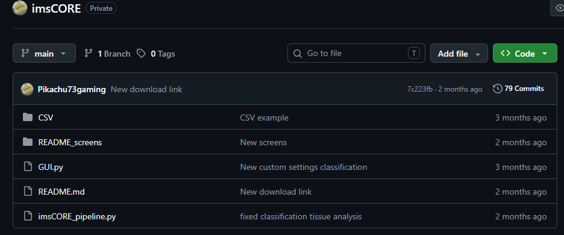
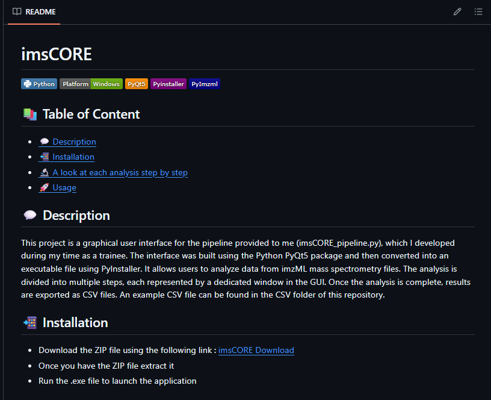
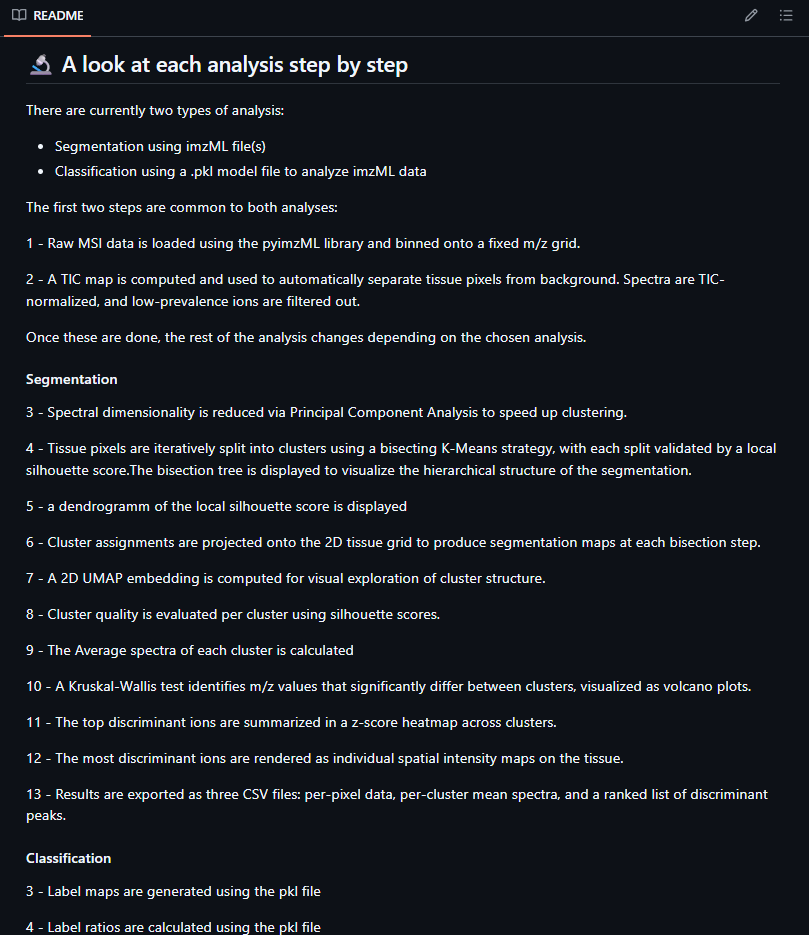
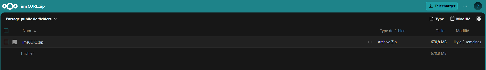

HOME
Réalisation : imsCore
Gérer le patrimoine informatique
Liste des sous Compétences
Exploiter des référentiels, normes et standards adoptés par le prestataire informatique
Explication
J'ai organisé les ressources du projet : scripts, fichiers de configuration et exports CSV. J'ai aussi veillé à garder un code organisé, avec par exemple les imports regroupés en début de fichier, pour faciliter la lecture et la maintenance du projet.

Répondre aux incidents et aux demandes d’assistance et d’évolution
Liste des sous Compétences
Traiter des demandes concernant les applications
Explication
Pendant le développement, j'ai rencontré plusieurs erreurs : bugs d'affichage, plantages avec certains fichiers, incohérences entre le pipeline et l'interface. J'ai dû les diagnostiquer et les corriger, en testant et en déboguant le code à chaque fois.
Mettre à disposition des utilisateurs un service informatique
Liste des sous Compétences
Déployer un service
Réaliser les tests d’intégration et d’acceptation d’un service
Explication
J'ai testé l'interface à chaque étape de son développement afin de vérifier que chaque fenêtre fonctionnait correctement avec des fichiers imzML réels. J'ai aussi rédigé une documentation utilisateur (README) illustrée de captures d'écran, afin d'accompagner les futurs utilisateurs dans la prise en main du logiciel.



Organiser son développement professionnel
Liste des sous Compétences
Mettre en place son environnement d’apprentissage personnel
Explication
Pour apprendre à utiliser PyQt5, j'ai fait des recherches et lu la documentation, puis j'ai réalisé plusieurs petits tests pour comprendre comment utiliser le package. Cette méthode m'a permis de monter en compétence rapidement sur une technologie que je ne connaissais pas au départ. J'ai également publié le projet sur GitHub, ce qui m'a permis de me familiariser avec un outil que j'utiliserai sans doute dans ma future vie professionnelle.
Tutoriel trouvé en ligne
Réalisation : Site Web CTT Montigny-en-Ostrevent
Gérer le patrimoine informatique
Liste des sous Compétences
Recenser et identifier les ressources numériques
Exploiter des référentiels, normes et standards adoptés par le prestataire informatique
Vérifier le respect des règles d’utilisation des ressources numériques
Développer la présence en ligne de l’organisation
Liste des sous Compétences
Participer à la valorisation de l’image de l’organisation sur les médias numériques en tenant compte du cadre juridique et des enjeux économiques
Travailler en mode projet
Liste des sous Compétences
Planifier les activités
Organiser son développement professionnel
Liste des sous Compétences
Mettre en place son environnement d’apprentissage personnel